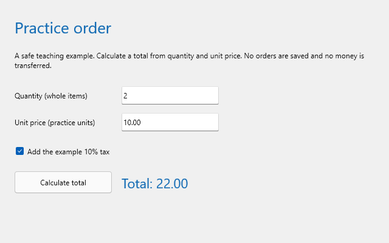
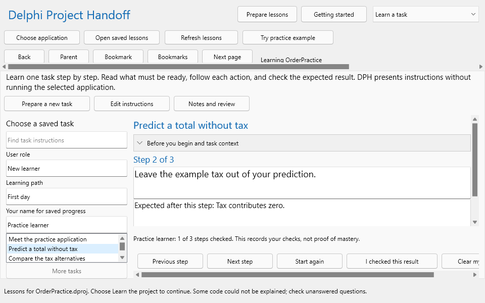
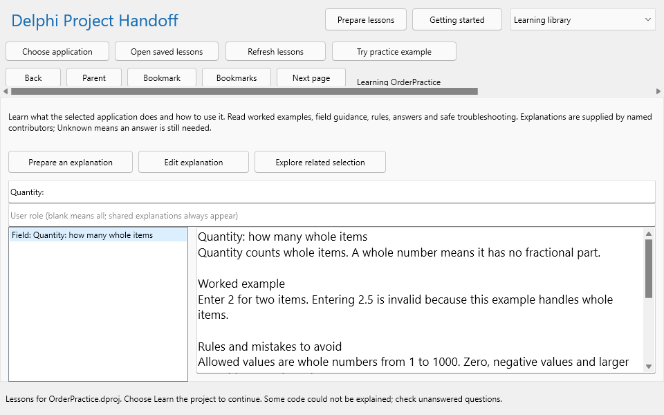
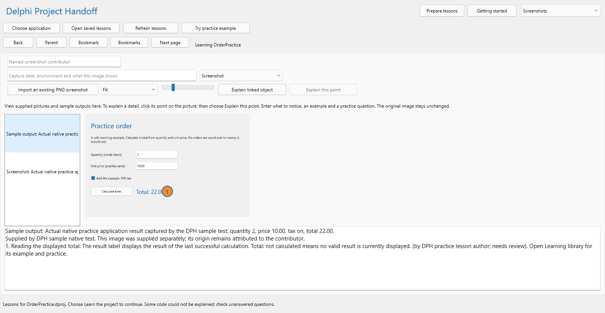

Guide edition 42 last changed 13 October 2026
Delphi Project Handoff, abbreviated DPH throughout this guide, is a Windows desktop learning application. It helps you study a Delphi program you have not used or maintained before. You can begin with the program's purpose, learn the meaning of a screen or field, follow a prepared task, and then investigate the source connections behind a visible action. This guide teaches you how to use DPH itself. Lessons displayed inside DPH teach you about the particular application you have selected.
Those two subjects are different. For example, this guide explains how to open Learning library. A teaching explanation inside Learning library might explain the Quantity field in an order program. Knowing how to open the library does not establish the order program's business rules; the selected application's source and knowledgeable contributors provide that information.
Read Parts I and II in order for your first session. Part III teaches investigation of screens and actions. Part IV explains how to prepare lessons for somebody else. Part V covers saving, sharing, recovery and more advanced preparation. The final reference chapters let you look up terminology and repeat a complete learning exercise without rereading the book.
A learner reads lessons and checks understanding. Start with the supplied practice example, then read one task for your own application. You do not need to understand Delphi code or source-reading settings to begin.
A lesson preparer supplies the information that source files cannot explain on their own: intended users, task prerequisites, field meanings, examples, expected outcomes and safe recovery instructions. Follow the learner route first so that you understand what your contributions will look like. Then use Part IV to prepare and review them.
A maintainer may also investigate source objects, source-reading settings and stale lessons. Those activities are described toward the end, after the ordinary learning workflows. Building or modifying DPH belongs in the separate Engineering Guide.
Delphi source includes project files, Pascal units and form definitions. DPH reads supported declarations, controls, events, operations and relationships from those files. It can show that a button's click event is connected to a named operation and that a captured condition changes the next path. It does not run the selected program to observe a successful transaction.
People contribute purpose, business language, instructions and real pictures. DPH keeps those explanations attributed to their contributors and records review separately. A missing explanation is a question to resolve, rather than an invitation to guess. A useful lesson combines the supported source connection with an explanation of what that connection means to the user.
Control names such as Choose application and Save task are written exactly as they appear in DPH. Click means press the left mouse button once. Double-click means press it twice quickly. Select means choose a list row, a file or an option before continuing. Type means enter text in the named field.
Each procedure states where to begin, what to do and what result to check. If a named control is outside the visible area, maximize the window or use that area's scroll bar. Do not substitute a similarly named button in another page. For example, Save task saves an entire task; Keep step only accepts the current step edit into its draft.
The desktop delivery is a ZIP archive containing DelphiProjectHandoff.exe and supporting folders. The executable is the file you open to start DPH. The help folder contains local user help, docs contains the manuals and directions, migrations contains files required to open lesson databases, and samples contains the supplied practice material. WebView2Loader.dll supports the embedded browser used for formatted learning pages.
Keep this folder together. Copying only the executable to another location can leave DPH without migrations, help or its practice lessons. Microsoft WebView2 Runtime is a separate Windows prerequisite; the loader file is not a replacement for that runtime. If formatted pages cannot open, see Chapter 24 before moving or deleting anything.
Before you begin, locate the desktop ZIP supplied for DPH and choose a local destination where you can save files. Avoid a temporary location that will be cleared automatically. You need write access because DPH stores lessons and working material separately from the selected source.
Expected result: you are viewing an ordinary folder containing the application and its supporting files. You are no longer browsing inside the ZIP. Starting an executable directly from the archive is not the supported procedure.
Expected result: DPH is open and ready to read or prepare lessons. Opening DPH does not run any application whose source you later select.
Use the standard Windows buttons at the upper right to minimize, restore, maximize or close DPH. Maximized gives the largest reading area. Restored lets you place DPH beside another program or the PDF guide. At the minimum window size, some command strips must scroll horizontally and some instruction areas scroll vertically.
To reveal a hidden command, use the horizontal scroll bar belonging to that strip. To reveal more text, scroll inside the text area first. If the pointer is over a list, the wheel may scroll the list rather than the whole page. This distinction matters when the task list and task instructions have independent scroll bars.
Reading a lesson does not create an unsaved draft. Preparing or editing explanations does. Before closing, finish the active save operation and check the status message. If DPH asks you to save or discard an edit, review the edit before choosing. Cancel the close if you are uncertain which draft is pending.
For a task, Keep step is not enough: choose Save task after keeping the step. For an application profile, Apply to Knowledge draft is not enough: return to Saved explanations and click Save. These two-stage procedures are explained in Chapters 15 and 16. A failed save must be resolved before you assume the new material is on disk.
Getting started returns to the introductory page. The selector beside it chooses a learner page directly. Prepare lessons opens the area for contributing introductions, tasks and other material. These controls have different purposes: choosing a learner page changes what you read; preparing a lesson changes the information available to learners.
Choose application opens a Delphi project for first-time preparation. Open saved lessons opens an existing .dphdb lesson database. Refresh lessons reads the attached source again. Try practice example opens the supplied example and its prepared instruction. Back returns through object-selection history, while Parent selects a containing object when one is available.
Bookmark records a useful selection for the current session. Bookmarks lets you return to one. Next page loads another page of object results when available. These object controls are most useful while investigating source connections. They are not replacements for Previous step and Next step in a prepared task.
The ordinary destinations are Getting started, Learn the project, Learn a task, Learning library, Form designs, Screenshots, Explain, Graphs, Business glossary, Search project and Saved explanations. You can move directly to one without navigating a long row of tabs.
Use Learn the project for a guided introduction. Use Learn a task when somebody has prepared ordered instructions. Use Learning library for field meanings, questions, error explanations and worked examples. Form designs and Screenshots answer different questions about appearance; Chapters 11 and 12 explain the difference. Explain and Graphs help you follow a source connection after you know why you are investigating it.
Some pages show an object list on the left and a labeled Selection details pane on the right. Click a row to inspect it; double-click to open the object explanation. A single click and a double-click therefore have different results. Expand or collapse a branch when browsing a hierarchy, and use the name search when you already know the object you want.
The larger center area presents the current lesson or investigation. Pages such as Learning library and Learn a task use more of that width by hiding unrelated object panes. If a pane divider is visible, drag it to change the available width. A blank selection pane means that no relevant object has been selected; it does not prove the project contains no objects.
The bottom line reports work in progress, completion and errors. A background operation may temporarily disable commands. Wait for its result before submitting another operation. If a save fails, the presence of text in the editor is not proof that it was saved. Read the error, retain the draft and use the recovery guidance in Chapter 24.
Some messages say that code could not be fully explained or that source needs refreshing. Continue reading the material that is available, but identify the uncertain point. Ask the preparer to resolve it rather than treating a technical status as a lesson about how the selected application behaves.
Practice order is a small example supplied with DPH. It accepts a whole-item quantity and a unit price, offers a ten-percent example tax option, and displays a calculated total. It does not save orders, contact services or transfer money. Its simplicity lets you follow one complete action from a visible input to a result.
The supplied material contains four ordered First day tasks, fourteen teaching explanations, an application introduction and two actual native pictures. Those pictures were captured from the example application during its designated test. They are not screenshots of your own selected program.
Expected result: you can name what the example does before looking at its source. DPH has opened the supplied lessons without launching the example program. Returning to Try practice example later reopens its existing lessons; it does not silently replace your saved teaching edits.
For quantity 2 and unit price 10.00, multiplication gives a subtotal of 20.00. With the example tax option off, no tax is added and the total remains 20.00. With the option on, ten percent of 20.00 is 2.00, producing 22.00. The checkbox changes a rule in the calculation; it does not change the original quantity or unit price.

Predict a second result before reading the answer. Quantity 3 at price 5.00 gives 15.00 before tax. The example tax is 1.50, so the total with tax is 16.50. Explain which value changes when the checkbox is cleared: the tax contribution changes, while the subtotal remains 15.00.
Quantity represents whole items. The sample accepts integers from 1 through 1000. A value of 2.5 is invalid even though it is a number, because it is not a whole-item quantity. A value of 0 is also invalid because it is below the minimum. The price accepts a decimal point and must stay within the example's stated bounds.
The learning goal is to recognize the reason for the error and the safe correction. Replace the quantity with a valid whole number and calculate again in an approved practice environment if you are running the example separately. Merely reading or checking a step inside DPH does not change inputs in another application.
Expected result: the first task in the prepared path is selected. The remaining tasks are Predict a total without tax, Compare the tax alternatives and Understand an input error safely. They are presented in prepared lesson order, rather than the order in which the author happened to save them.
Read the action first. Then read the expected result for that same step. The action says what to do or think about; the result says what you should be able to observe or explain afterward. Do not jump to the next step simply because the current paragraph is short.
Choose Next step to move forward and Previous step to reread an earlier step. These navigation commands do not claim you completed a check. At the last step, read the final result, troubleshooting guidance and practice exercise. Compare your explanation with the supplied answer.

Meet the practice application teaches the boundary and the visible controls. Predict a total without tax teaches how quantity and price combine. Compare the tax alternatives teaches a condition that changes the output. Understand an input error safely teaches the difference between a valid number and a valid business input.
After each task, describe the result in your own words. For example, do not simply repeat TaxCheck. Say that the example adds ten percent only when the tax option is selected. The program name or control name is a route to the explanation, not the explanation itself.
Clear the task search, role and path filters before concluding that instructions are absent. A path name filters the list; it does not create a path. If the list is still empty, confirm that the correct application lessons are open. Ask the preparer to add an ordered task using Chapter 16.
An older free-text user-help note may be readable without having separate steps. DPH preserves that contribution, but it cannot manufacture a reliable sequence from an unstructured note. The preparer can create a new structured task while keeping the original note as supporting material.
Before you begin, select a structured task and enter a name in Your name for saved progress. Use the same spelling when you return. This name identifies local progress; it is not a password or an account in the selected application.
Expected result: DPH remembers consecutive checked steps for that learner, application, lesson identity and exact instruction revision on this computer. A changed task revision requires fresh checks. This prevents a revised procedure from inheriting completion recorded for older instructions.
Next step and Previous step let you read without recording a check. Start again returns the reader to the beginning without clearing saved checks. Clear my progress resets the checks for the selected task and learner. In a narrow window, scroll the task navigation strip to find the reset command.
If you want to repeat an exercise without losing your recorded place, use Start again. If you want DPH to treat the task as unchecked for this learner, use Clear my progress. Confirm the resulting count rather than assuming both commands do the same thing.
A checked step records your statement that you checked its expected result. It is not proof of mastery, permission to use a production system, or a recording of actions in the selected application. DPH does not observe another program while you click through a task.
For a stronger learning check, close the explanation and describe the action, input, decision and output from memory. Then reopen it and compare. If you can repeat the words but cannot explain why the result differs when the tax option changes, revisit the worked example before marking the check.
Lesson databases and personal progress are stored separately. Copying a .dphdb file and its adjacent .views folder preserves lesson material; it does not transfer this computer's local learner progress automatically. If you need a record outside DPH, keep your own learning notes with the application name, task name and instruction revision.
Do not use somebody else's learner name to claim their progress. Shared names on one computer may refer to the same local progress key. Use a consistent distinct name for each learner who needs separate checks.
Ask the application owner for the Delphi project file and the associated source and form files. A compiled executable alone does not provide the declarations and connections DPH reads. A .dproj file describes a project, a .dpr file is its main Pascal program source, and a .groupproj file identifies a group of related projects.
Also ask for the intended user, one common task, example inputs, expected outputs and a safe practice environment. Those answers make the first lesson useful. Do not assume a source folder contains every required dependency or an explanation of every business decision.
Expected result: one lesson database is associated with that selected application or project group. DPH writes its own database and managed views outside the selected source. It does not modify or compile the selected project.
Expected result: saved lessons can remain readable when the original source is unavailable. Availability of a cache does not establish that the selected program is unchanged today.
Save or explicitly discard any contribution draft before switching. Open the other application's database or choose its project. Do not reuse a database belonging to another source root merely because its filename is convenient. If DPH reports that the store belongs to a different root, preserve it and use the relocation or new-database procedure described later.
If an opening attempt fails, read the error before trying another file. A rejected selection should not be treated as a successful application switch. Check the current title and selected application again before writing a contribution.
Choose Learn the project. The topic list organizes a route through purpose, startup, screens, actions, decisions, information, program organization, changes, questions, terminology and tasks. Read the topic that answers your current question rather than attempting to memorize every source object.
Start here explains what is known about the application and offers a first route. How it starts introduces startup work. Screens and actions connects a visible control to a supported event or operation. Follow an action continues from that starting point. Decisions and loops explains alternatives and repetition from captured source conditions.
Inputs and results helps you ask where information comes from and what it becomes. How the parts fit introduces units and their connections. Questions and answers combines supplied replies with unresolved questions. Delphi terms explains programming vocabulary, while Business glossary elsewhere contains the selected application's business language. Task walkthroughs presents supplied instruction, including prepared path order when available.
For any topic, begin with the application purpose and intended user. A control named SaveButton suggests an action, but it does not tell you what is saved, where it goes or which permissions are required. Read the linked contribution or ask the author for that meaning.
After reading a lesson, answer a specific question. For example: Which user action begins this work? What information is required first? Which captured condition changes the path? What output should the user recognize? These questions make the source connections meaningful without requiring you to read an entire unit.
Click a linked object when you want its explanation. Read the selected name and role, then its relevant supplied purpose. Use Back to return through object history. Return to Learn the project with the top-right selector when you want the topic route again.
A lesson may limit the number of source examples shown so that it stays readable. That limit is not a statement that the application contains only those examples. Use Search project or the object list when you need a particular item beyond the guided selection.
If the purpose is missing, write down a focused question for the author: What does this operation help the user accomplish, what input does it require and how does the user recognize success? A question tied to one action is easier to answer than Explain the whole application.
When the answer arrives, the preparer should save it with a named contributor and appropriate link. The next learner can then read the reason alongside the source connection. Refreshing source alone cannot supply an unwritten business explanation.
Expected result: you understand the subject and can apply its example. A search match alone is not enough; verify that the explanation belongs to the selected application and the intended role.

Topic name identifies the subject. User role tells you whom the explanation helps. Meaning explains what the subject is and why it matters. Example shows a valid input, interpreted output or worked situation. Limits describes rules, units, permissions and mistakes. Help explains what to do if the result differs. Practice gives an exercise and its expected answer.
For a Quantity field, meaning could explain whole-item order count, example could use 2, limits could require integers from 1 through 1000, and help could explain how to replace 2.5 safely. The practice answer should explain the rule, not simply repeat the field caption.
Screen describes the purpose and arrangement of a visible area. Field explains one input or displayed value. Error or problem explains a symptom and recovery. Question and answer gives a focused reply. Business rule describes a condition and its consequence. Output or report explains what a result means and how to read it.
Role or permission describes who may perform work; it does not grant access. Related system explains a dependency. Setting or option explains how a choice affects results. Background work explains what may happen after a visible action. History or design choice preserves a reason for an existing approach. Learning check gives an exercise to test understanding.
Clear the search and role fields, then select a row again. If the expected explanation still does not appear, check the selected application and ask whether the contribution was saved, rejected or retired. Rejected and retired teaching cards are excluded from the current learner list.
If a linked object no longer exists in the current capture, the reader may still preserve useful prose while Explore related selection is unavailable. Ask the preparer to review the connection. Do not treat an old link as current simply because its explanation is readable.
A form is a window or screen definition. A component is an item placed on that form, such as a button or input field. An event describes something that may happen, such as a click. An event handler is the operation connected to that event. A routine is a procedure or function that performs a piece of work. A unit groups related Delphi declarations and implementation.
You do not need to write Delphi to use these distinctions. They let you say A click on Calculate total enters CalculateClick, which validates the values and calculates the displayed result. That statement connects a user action to understandable work.
Expected result: you can explain one path through the selected application. A static connection shows a supported relationship in source, rather than proof that the path ran successfully in a live system.
Find CalculateClick in the supplied example through a linked control or Search project. Read the quantity validation and the tax decision. Identify how the operation uses the input fields and changes the result label. Compare the source-derived condition with the library's plain explanation of tax on and tax off.
Now change the question: What happens when quantity is 2.5? Read the supplied error explanation and the captured validation behavior. The incorrect input prevents the ordinary total path. That is a useful learning result even when you are not executing the program.
Explain includes optional source walkthrough and deeper supporting detail. Expand it when a specific condition or relationship needs investigation. Source text, a trace and a diagram answer different questions: text shows the captured statement, a trace lists supported connections, and a diagram makes possible branches easier to see.
An unresolved or uncertain connection needs checking by someone who understands the source. A graph is not a recording of a user session. For a dynamic event assignment or external service behavior, ask for observed examples or a knowledgeable explanation.
Choose Form designs to inspect a saved Delphi form definition. This is a reconstruction from source, not an automatic photograph of the running application. It helps you identify control names, positions, captions and supported event connections. Custom controls, styles, inherited forms and runtime changes can make the real screen look different.
Select a form, inspect a control and follow its explanation where available. Use the available view controls to fit or inspect the design. If your question concerns what the user actually sees today, compare it with a supplied real screenshot in Chapter 12.
Choose Graphs after selecting an object relevant to your task. Use the graph kind to focus on the relationship you need: Execution, Procedure CFG, Caller / callee, Form navigation, Data flow, Change impact, Data lineage or Business process. The separate grouping selector offers Objects, Types and Units. Select a node or group to investigate its explanation rather than reading the entire diagram as a single process.
For a call relationship, ask why the first operation needs the second. For a unit relationship, ask which responsibility is being used. When a branch is shown, compare its label with the actual condition. The graph may be bounded to keep the page usable; hidden or omitted nodes are not proof of absence.
An arrow describes a supported relation between two captured objects. Its direction matters. A caller uses another routine; the callee does not necessarily call back. Incoming and outgoing connections answer opposite questions, so confirm which direction you are reading.
Unresolved endpoints, inference labels or warnings indicate that DPH cannot establish the entire connection. Keep that uncertainty in your explanation. Saying the source suggests this path and the author needs to confirm the dynamic target is more useful than presenting an unverified guess as fact.
In the practice example, identify the calculate button, its click handler and the input controls used by that handler. Explain why the result label is an output rather than an input. Then identify the tax decision and describe both outcomes.
You have completed this exercise when you can connect the visible button to a named responding operation and explain the result using the example numbers. You do not need to memorize every object or arrow on the page.
In Form designs, choose a captured form from the form selector. Use Thumbnail for an overview, Fit for the available viewing area, Native for the saved design scale or Custom zoom when a control needs closer inspection. The zoom slider ranges from 25 through 400 percent. Full screen gives the design the largest available viewing area; use the full-screen control again to leave that view.
Inspect the warning beneath the controls: this is an approximate design-time reconstruction. Select a relevant control and open its explanation when available. If a runtime screen differs, preserve that distinction and compare with a supplied picture rather than calling the reconstruction a current screenshot.
Execution gives an overview of supported execution connections. Procedure CFG means procedure control-flow graph: it focuses on alternatives, repetition and stopping paths within a routine. Caller / callee asks which operation calls another. Form navigation asks about supported connections between forms. Data flow follows captured information-use relationships.
Change impact explores relationships that may be relevant when a selected object changes. Data lineage concerns where captured information comes from and goes. Business process presents supported process-oriented material where available. These are bounded source/knowledge views, not automatic proof of a complete real-world workflow. If a graph has no useful result, identify what evidence is missing instead of concluding that the application has no corresponding behavior.
Expected result: grouping reduces visual detail while preserving a route to the members that matter. Changing grouping changes presentation, not the source or the application's actual behavior.
Choose Screenshots. Select an image in the left list and read its caption, image kind and contributor information. Screenshot means a supplied screen picture. Sample output means a supplied result or report example. Other teaching image is a diagram or illustration supplied to explain something else.
Use Fit to see the whole image within the available area. Native pixels shows its own pixel size. Custom zoom uses the zoom slider, whose range is 25 through 400 percent. When the image is larger than the area, scroll within the image view. A small image cannot reveal detail that was never captured at higher resolution.
Numbered markers identify teaching points over the supplied picture. Read the legend below the picture to find what each point means. Open Learning library for the full explanation, worked example and practice answer. A marker anchors the explanation to a location; it does not establish that the pictured output is current or correct for every situation.

In the practice output image, find the explanation of the displayed total. Relate the caption's quantity, price and tax state to 22.00. If you read the number without reading the input context, you have not yet understood the output.
Explain linked object opens a captured object associated with the image when one is available. Use this when you want to connect what you see with a control or operation. An unlinked image may still be useful teaching material; ask the preparer to supply the connection if it matters.
The caption should identify context such as application version, sample values and relevant options. A screenshot with no context can mislead a new learner. If the image conflicts with the current form or instructions, record the difference and ask the contributor which version it illustrates.
Before you begin, obtain an existing PNG file you are authorized to use, a meaningful caption and a named contributor. If it should connect to a source object, select that object first.
Expected result: DPH manages a copy of the supplied image. It does not launch or capture the selected application automatically. Keep the original picture independently if it is an important record.
Expected result: the point remains anchored when the image is resized or zoomed. The original PNG is unchanged. If you clicked the wrong point, cancel the new draft and start from the correct location rather than saving a misleading annotation.
The object-list search helps you find captured source objects by name. The Learning library search finds teaching-card titles and bodies. Search project searches the indexed project material, including objects, evidence, knowledge and diagnostics. Choose the search that matches your question.
If you know a field caption but not its Delphi name, begin with Learning library or a screen lesson. If you know CalculateClick, use the object search or Search project. If you are investigating an exact failure message, try the teaching library first for safe recovery instruction, then inspect source evidence with a maintainer if needed.
Expected result: each query word matches the beginning of an indexed word, and all query words must match. This is different from a web search that may discard some words or search for synonyms.
Begin with one distinctive word, then add a second only if there are too many results. A long sentence may have no match because every word must match. Try the source name and the user-facing term separately. The business glossary may identify aliases that help you choose a better query.
An evidence match is not automatically a reviewed explanation. Read its type, source context and review qualification. A diagnostic match identifies a question or capture problem; it does not by itself explain a user's production error.
When a useful source object is selected, choose Bookmark. Use Bookmarks to return during the session. Record the application, object and question in your own learning notes if you need to preserve the route outside DPH.
Use Back for the route you just followed and Parent for a containing object. Next page changes the page of object results; it does not advance a task step. If the wrong selection appears, check which navigation area you used.
Business glossary contains vocabulary used by the selected application or its business process. Delphi terms explains programming words such as form, event and routine. A term such as subtotal may belong to the business glossary; a term such as procedure belongs to the programming explanation.
Open Business glossary and search for a word or alias. Read the definition, example and context. The same word can mean different things in different applications, so verify the selected application and contributor before applying its definition elsewhere.
Questions and answers in Learn the project presents supplied answers and unresolved points. Author questions in Prepare lessons provides a route for recording a contributor's answer. A useful answer includes the question, the reason for the behavior, a concrete example and any limit on when it applies.
For example, Why did changing Quantity not update Total? should be answered with the actual trigger: the sample recalculates when Calculate total is clicked. A reply that merely says it is event-driven leaves the beginner without an action to take.
Saved explanations preserves content with contributor and revision information. Save creates a contribution; review is a separate action. Pending material may be useful while still requiring confirmation. Rejected or retired content is historical material, rather than current task instruction.
When source changes, a previous review may need repeating. An unchanged paragraph is not necessarily still applicable if the operation it describes has changed. Ask the reviewer to compare the current task, current source connection and supplied example.
Write the application name, visible action or field, what you expected, what you can establish from the lesson and what remains unknown. Include example values without private customer information. Ask one answerable question at a time.
A useful question is For quantity 2 and price 10.00, should selecting the tax option change the displayed total immediately or only after Calculate total? It identifies an observable distinction. What does all this code do? does not provide the author a clear starting point.
Identify who uses the application, the problem it solves, one common task, the environment suitable for practice and the person who can answer questions. Ask for missing information rather than filling a field with a plausible story. The introduction should help a newcomer choose an appropriate first task.
A weak purpose says Order processing application. A stronger purpose says Practice order lets a learner enter a whole-item quantity and unit price, choose whether the example tax applies, and calculate the displayed total without saving an order. The stronger version identifies the user, input, action, result and boundary.
Expected result: the saved application introduction appears with attribution. Applying the dialog alone does not save a revision to the lesson database.
Owner identifies responsibility for the application, while contributor identifies who supplied this description. Support explains where the learner should take a question. Safe practice environment describes where an exercise may be attempted without affecting production work. Related systems names dependencies only when they matter to understanding the application.
Architecture should explain responsibilities and information movement, not list every unit. For the sample, one form validates input, calculates a total and displays a result. For a larger system, identify the visible client, the service it uses and the result returned, while leaving unwritten details marked for confirmation.
Read the saved purpose without looking at the source. Can you identify the intended user and the first useful action? Is a safe practice location clear? Does the explanation define unfamiliar terms? Does it make an unsupported claim about a system DPH has not observed?
Revise the draft if it only repeats product names or technical component types. Preserve uncertainty where the author has not answered. The aim is enough orientation to begin learning, not a confident paragraph that conceals missing knowledge.
Choose one result the learner should accomplish. Identify prerequisites, a small set of actions, an observable result after each action, final success criteria, safe recovery and a practice check. Separate unrelated goals into different tasks. A path then arranges those tasks in a sensible teaching sequence.
For Predict a total without tax, prerequisites are understanding the two inputs and the tax option. The actions identify quantity 2, price 10.00 and tax off. The expected result is 20.00. Practice can ask for quantity 3 and price 5.00. This teaches a specific concept rather than requiring a beginner to inspect every control at once.
Expected result: the task draft describes its purpose and final result, but it is not yet saved. Blank role means the task is not restricted to one learning role. A role is a filter, not an authorization mechanism.

Expected result: each listed step has both an action and a result. Undo step edit discards the current unsaved step edit; it does not replace the need to save the whole task.
Expected result: the task has an attributed saved revision. A save error leaves a problem to resolve; do not close the draft assuming it was saved. Cancel changes discards the task draft explicitly.
A task contains six teaching fields and between one and 100 steps. Each field and each step action or result has a 4096-character limit. The task name is limited to 200 characters and must be descriptive; the purpose must explain what the learner accomplishes. Unknown is accepted for genuinely unresolved supporting answers, but not as a substitute for the task name, purpose or step action.
The role and path names are each limited to 200 characters. The complete structured task is limited to 64 KiB. These are storage and validation limits, not recommendations to fill every field to its maximum. Keep each step focused enough to read and check.
The saved task identity is retained during revision. Personal progress belongs to the exact revision, so a changed instruction requires fresh checks. Create a different task when you need a different learning goal rather than repurposing an old identity with an unrelated procedure.
Give related tasks the same path name and assign increasing order numbers. Start with orientation and safe boundaries, then inputs, the ordinary action, alternative outcomes and error recovery. Leave space between numbers if you expect to insert another task later; the order needs to be a whole number, not consecutive numbering.
Test the path with its intended role filter. Tasks for unrestricted learners may also appear, so read the names and prerequisites. DPH presents the prepared order, but a learner can select a later task; the path is teaching structure, not enforced certification.
Use a teaching explanation for a screen, field, exact error, recurring question, rule, report, permission, dependency, setting, background activity, design reason or learning check. Choose one subject that a newcomer will recognize. A title such as Quantity accepts whole items is more useful than General information.
Select a related source object before creating the explanation if you want a contextual link. A linked object should actually support this subject. Do not attach an explanation to a convenient unrelated object just to make the link button appear.
Expected result: the library leads with useful meaning and an example, with attribution and review status available. The save creates a contribution, not independent verification of its accuracy.
Name: Quantity represents whole items. Role: New learner. Meaning: enter how many items the example should price. Example: 2 at unit price 10.00 produces subtotal 20.00. Limits: use a whole number from 1 through 1000; fractions such as 2.5 are invalid. Help: replace an invalid value with a whole number, then calculate again in the approved practice environment. Practice: explain why 0 is invalid. Expected answer: it is below the minimum.
Notice that the example explains units and limits separately. It also identifies what to do after a correction. An explanation that merely says Enter quantity leaves the learner unable to recognize a mistake.
Name: Read the displayed total. Meaning: the total includes subtotal and the example tax only when selected. Example: quantity 2 and price 10.00 give subtotal 20.00; with tax selected, add 2.00 to display 22.00. Limits: this sample's tax is a teaching rule and not a real tax policy. Help: if the value differs, check the input values, checkbox state and whether Calculate total was used. Practice: predict the total for quantity 3 and price 5.00 with tax; expected answer 16.50.
For a real report, describe its period, units, filtering, columns and how to interpret a subtotal or exception. Mark the parts that still need an application owner's answer. Do not infer a report's business meaning merely from a numeric column name.
Select it in Learning library and click Edit explanation. Change the relevant teaching fields, save, and reread the actual library result. A saved topic keeps its identity; prepare a new explanation when the subject is different. Unknown is allowed for unresolved supporting knowledge, but a topic still needs a real name and meaning.
Each of the seven teaching fields is limited to 4096 characters. A useful explanation should be complete enough to teach its subject without becoming an unrelated manual inside one card. Link related explanations or prepare separate tasks when the subject has multiple goals.
Expected result: the selected application's vocabulary is explained with context. A term and its aliases must not duplicate another current term identity. A spelling variation should clarify one meaning rather than create two competing definitions.
The term must fit on one line and be at most 128 characters. Up to 32 aliases are supported; each must also be a nonempty single line of at most 128 characters. Definitions and examples are limited to 16384 characters each, while context is limited to 4096. Do not use these limits as a reason to include unrelated topics under one term.
In Prepare lessons, choose Action purposes. Use its name and review-state filters to find the action, and use First page or Next page if the result is on another page. Select the action and click Edit purpose. Describe what the user accomplishes, the input or prerequisites, the expected output, permissions and remaining questions in the offered fields. Apply the explanation draft, then Save it in Saved explanations. Open in Knowledge returns to the general saved record when you need its revision or review controls.
The action purpose is the reason for the work. The source handler is the connection that performs it. For Calculate total, the purpose is to price the entered whole-item quantity under the selected example tax choice. Naming CalculateClick alone does not supply the purpose.
The editor distinguishes stable action identity, captured target, captured object key, action name, screen and user role, user trigger, business purpose, prerequisites and permissions, numbered user steps, expected business outcome, evidence and remaining unknowns, and failures/recovery. Keep an automatically supplied captured identity connected to the intended object. New task is for an explicitly attributed project task where a captured component is not the right starting point.
Expected result: the reply is attributed and remains connected to its question. A source analyzer may identify a question but cannot approve the author's business explanation automatically.
State which application behavior or example the answer describes. If the behavior later changes, revise the answer rather than deleting its history. Ask a reviewer to compare the explanation with the current source and approved example. Retire information that should no longer be taught as current, preserving history when required.
Do not copy passwords, access tokens or private customer data into an answer. A general example should teach the rule without reproducing an actual customer's confidential record.
Expected result: the explanation has a saved revision. Editing a record and saving again creates another revision; it does not erase the earlier contribution.
Saving content does not mean someone checked it. A knowledgeable reviewer should compare the current contribution with the intended application behavior, source connection and a reliable example. Enter the reviewer's name and use Verify review on the intended record. Current-source review requires attached current source and the correct reading configuration.
Reject identifies content that should not be accepted as current instruction. Retire preserves material that no longer belongs in current use. Discard edit abandons an unsaved editor change; it is not the same as retiring a saved revision. Confirm the selected record before using any of these commands.
Knowledge links in Prepare lessons lets you associate authored material with captured objects or supporting records. First select or edit the intended record in Saved explanations, then open Knowledge links. Choose entity, relationship, evidence, screenshot or section as the target kind, enter an optional name filter and click Find targets. Select the target in the left list and choose explains, cites, depends_on or illustrates as the role. Click Add link. Inspect the selected-link list on the right, return to Saved explanations and click Save. Adding a link to the draft alone does not persist it.
For a field guide, link the real control when available. For a business rule, link the operation or condition that implements the rule. For a supporting answer, link the exact contribution or evidence being discussed. A link preserves traceability; it does not prove that the explanation has been reviewed.
To remove a draft link, select it on the right and click Remove link, then Save the changed explanation. Open saved target lets you inspect a supported saved target. Find targets returns at most 200 matching candidates, while a section supports up to 64 saved links. Narrow a broad name filter instead of assuming the first 200 candidates contain every possible target.
If DPH reports that the expected revision differs, another save has changed the current record. Preserve your draft, refresh or reopen the latest saved revision and compare the two. Reapply only the intended correction and save against the current record. Do not overwrite newer content merely to eliminate the warning.
When a save fails for validation, read the specific missing field or limit. Correct that draft and retry. When it fails for storage or access, preserve the last readable database and follow Chapter 24. Text remaining in an editor is not proof of a successful save.
Runtime observations in Prepare lessons stores a previously saved log as an attributed claim about a run. Select the relevant Explorer object first if the observation should link to that object. Enter Contributor and Run, environment and outcome description, then click Select saved log and import. Choose the existing log file and wait for confirmation. Refresh saved records retrieves the newest 50 entries. Explain linked current object follows a resolvable current link when available.
Read the saved observation with its context. DPH did not execute the target, verify the timestamps or infer causal order from this import. These records stay local with the lesson database and are included in explicit database backups; they are not automatically published. For a learner-facing explanation, prepare an attributed teaching card that explains the relevant finding and states its limits, without exposing the private raw log unnecessarily.
In Prepare lessons, choose Projects and open Known databases. Select a row and click Open selected, or double-click it. Read the application identity after opening. Refresh updates the displayed catalog list; it is different from Refresh lessons, which reads source again.
Remove from list forgets a catalog entry without deleting its database or source project. Missing entries remain visible so that you can locate moved databases. Use Open saved lessons to open the database at its new location, then forget an obsolete catalog entry if appropriate.
Before refreshing, save or explicitly discard contribution drafts. Confirm that the attached source belongs to the intended application and that the preparer has selected the correct source-reading settings. Click Refresh lessons and wait for completion.
After refresh, revisit the purpose, one representative action and the prepared tasks. Source refresh updates captured facts; it does not automatically confirm every human explanation. If a linked control or operation changed, review the related instructions before treating them as current.
Saved lessons can be useful when source is temporarily unavailable. Read the cached material with its captured context and stated limits. You can learn from a historical example while acknowledging that it has not been compared with today's source.
Do not rename a different source folder to make it appear current. Reconnection needs the actual intended source. If the source moved, use the verified relocation procedure with a knowledgeable preparer rather than creating an unsupported identity match.
In Prepare lessons, expand Source reading settings and use Relocate verified source when an existing application's source has moved. Select the intended project at its new location and allow DPH to check it. A mismatch must be investigated instead of forced.
Relocation is appropriate for the same logical source set at a new location. It is not a way to merge two unrelated applications into one lesson database. Preserve the existing lesson database and its adjacent managed folder before any maintenance activity.
An offline edition is a readable export of selected application material. It is different from the editable lesson database and different from the DPH desktop delivery. Save and review the intended contributions before exporting. Read captions and examples for sensitive information, especially if pictures came from a production system.
Choose the appropriate audience and scope in publication settings. Exclusions and selected seeds can limit what is exported. An excluded object or file should not be presented to the recipient as if its supporting connection were included. Ask a maintainer for help if you need a narrowly scoped edition.
Expected result: the edition begins with learning material, contains its selected tasks and examples, and preserves the links and pictures supplied for that scope. Preview is a check of the exported edition, not a replacement for inspecting it.
Share the complete output folder. Keep its assets, images, objects and supporting indexes together. If you send only learning.html, linked explanations and pictures may be unavailable. If you compress the folder for transfer, tell the recipient to extract the whole folder before opening learning.html.
Open an object link, a task and an image from the transferred copy. This checks that the recipient's copy contains the necessary files. A file that worked on the preparer's computer may still be absent from a partial transfer.
The exported edition is read-only presentation. To change explanations, return to DPH and its .dphdb lesson store, save the change and create a new edition. The shared folder does not replace the editable store or its revision history.
If the recipient needs printable companions, use the guides provided with the edition or ask the preparer to create its PDF companions. Conversion and validation of those technical artifacts is covered in the Engineering Guide.
Expand Optional publication settings on Publish. Full project includes the selected project's available scope. Selected object and context starts from the current selected object and its supported related context; select that object before exporting. Enter relative files or folders to exclude in the exclusions field, separated as indicated by the control. Audience offers all, engineer, user, maintainer, builder and agent. Audience organizes content; it does not replace file exclusions.
Include redacted source browsing pages adds technical source material that requires review before sharing. Include generated agent boundaries adds generated instructions, rather than copying a private owner AGENTS.md file. Optional authored-body translation locale is meaningful only when the supporting translated material is available. For an ordinary beginner edition, retain the learning route and include technical extras only for a specific recipient need. After setting scope, return to the export steps and inspect the actual output.
The .dphdb database contains captured facts and authored knowledge. Its adjacent .dphdb.views folder can contain cached views and managed images. Preserve both together. The Databases folder shipped with DPH is a convenient default location, not a requirement to mix all applications into one database.
Personal checked-step progress is local to this computer and stored separately. An offline edition preserves a reading copy. These three items serve different purposes, so keeping one does not automatically preserve all three.
Expected result: the preserved copy can provide lesson material if the working location becomes unavailable. Do not copy an actively changing store and assume the resulting files are consistent.
The current ordinary learner and preparation selectors keep database administration out of the main teaching route. Maintainer-only controls may exist in the code without being ordinary learner destinations. Do not follow an obsolete instruction to select an administration page that is absent from your current selector.
An engineer responsible for database backup, restore, integrity or cache retention should use the Engineering Guide and the verified interfaces available in that build. These mechanisms preserve DPH lesson data; they are not backup or restore engines for the selected application's business database.
A missing catalog entry is not evidence that its database is expendable. A .views folder may contain original supplied teaching images as well as generated pages. Do not delete it merely because its name sounds temporary. Ask the preparer or maintainer to identify exactly what is reproducible and what is authored material.
For your own temporary learning exercise, label its database clearly. Keep production application source, user lesson stores and disposable validation output separate. This makes later cleanup deliberate rather than speculative.
Prepare lessons contains a collapsed Source reading settings section. Learners normally leave it closed. A preparer may need it when conditional source, missing dependencies or incorrectly displayed older text prevents useful lessons.
Configuration, platform, extra defines, explicit dependency roots and text encoding describe how DPH should read the source. They are not settings for running the selected application. Changing them does not rebuild or launch it.
Ask the application author which Debug or Release configuration and Win32 or Win64 platform describes the code you intend to teach. Enter additional compiler defines only when required and separate them with semicolons. Different defines can make different source branches relevant.
Use explicit dependency roots for source folders the author authorizes DPH to read outside the project tree. A missing dependency should be supplied or identified; guessing a broad drive root is not a substitute for knowing which files belong to the application.
Text encoding tells a program how stored bytes represent characters. It is unrelated to translating the application's language. Leave the source-reading code page at 0 unless an older source file displays incorrect characters and the author supplies the appropriate Windows encoding number.
For example, a source file originally saved with a legacy Windows encoding may need that encoding to display accented text correctly. A byte-order mark in a Unicode file takes precedence. After changing reading settings, refresh the lessons and inspect the affected text again. Do not edit the source just to make DPH display it differently.
First confirm the intended project file and source set. Ask whether includes, dependent units and form files are present. Then confirm configuration, defines and allowed dependency roots. If the code uses runtime behavior that DPH cannot establish statically, supply a qualified teaching explanation instead of forcing the analyzer to claim certainty.
An incomplete capture should result in a precise unresolved question and a useful explanation of what is known. It should not dominate a beginner's lesson with fingerprints or technical counters. Deeper diagnostics belong with a maintainer investigating that gap.
Check that you extracted the full delivery and are starting DelphiProjectHandoff.exe from the extracted folder. Confirm that the supporting files are present and the location is writable. Preserve the exact Windows error message if startup fails. Do not begin deleting lesson stores to solve an executable startup problem.
If the window opens but formatted pages do not, the problem is different from failure to launch. Check WebView2 Runtime and its loader with the maintainer. Use the native text explanation where the page provides one, and try an exported learning.html independently to distinguish embedded-browser failure from missing lesson content.
Confirm the selected application. Clear name, role and path filters. Check whether another page of tasks is available. Ask whether the preparer saved a structured task or only wrote an unsaved draft. A note in Saved explanations is not automatically an ordered task.
Rejected and retired teaching material is excluded from current learning lists. If a contribution was recently revised, reread the current revision and filters. Do not create a duplicate merely because an existing item was hidden by your search.
Read the exact status message. A blank required field, an invalid lesson order or an oversized field requires a draft correction. A revision conflict requires comparison with the latest saved content. A writer-ownership error means another DPH writer already owns the lesson store; resolve that ownership rather than opening more instances against the same database.
Keep the draft visible while diagnosing the problem. If you must preserve it outside DPH, use an approved note without exposing private data. Confirm a subsequent successful save and reopen the contribution before declaring the issue resolved.
Check that the original import succeeded and that the adjacent managed folder was preserved when moving the database. Select the image and read its caption. Try Fit before assuming the image is empty; at a large custom zoom, the interesting area may be outside the current viewport.
For a marker that points to the wrong detail, inspect the original image and the selected point. A marker moves with the image, not with a changing live application screen. If a replacement image has different geometry or meaning, prepare or review the explanation against that replacement rather than reusing the old point blindly.
Confirm that the complete edition folder was transferred and extracted. Open its learning.html at the top of that folder. Keep the objects and assets subfolders together. If files are missing, transfer the entire edition again instead of replacing individual links with paths from the preparer's computer.
If the edition itself is invalid, regenerate it from the intended saved material to a new folder. A checksum or fingerprint error is a maintainer investigation, not a reason to disable validation or rewrite the manifest manually.
Use the same learner name, application and saved task revision on the same computer. A changed instruction revision correctly requires fresh checks. Next step does not record progress; use I checked this result after actually checking its expected result.
Start again rereads from the beginning but retains checked steps. Clear my progress resets them. If those commands appear to have the same effect, inspect the checked-step count and which revision is selected before reporting an error.
Record the DPH delivery version, selected application, page name, exact action, expected result and actual result. Include the exact error text and a picture of the relevant area if appropriate. Use example data instead of private customer information.
Describe the shortest sequence that reproduces it. For example: open the supplied practice example, choose Learn a task, select the second task, enter a learner name and check the first result. This lets the maintainer reproduce the same state rather than guess which of many pages you meant.
Choose application starts first-time source preparation. Open saved lessons opens an existing database. Refresh lessons rereads attached source. Try practice example opens the supplied teaching example. Getting started returns to basic directions. Prepare lessons opens the contributor route. The top-right selector changes learner destinations.
Use these commands according to the material you have. A learner who received a .dphdb starts with Open saved lessons; a preparer who received Delphi source starts with Choose application. Neither command runs the selected target application.
Back follows object-selection history. Parent selects a containing object. Bookmark and Bookmarks help revisit a selected object during the session. Next page loads additional object results. Search and Next 50 results belong to the project search page.
Previous step, Next step and Start again belong to a prepared task. I checked this result records personal progress; Clear my progress resets it. Explore related selection belongs to a teaching explanation and follows an available current captured link. These commands are not interchangeable merely because they all move between information.
Prepare a new task and Edit instructions open the task editor. New step begins a step draft; Keep step accepts it into the task draft; Save task persists the whole task. Cancel changes abandons the task or teaching-card draft.
Prepare an explanation and Edit explanation open the teaching editor. Save explanation persists its teaching fields. Apply to Knowledge draft in a specialized dialog returns material to the general editor; Save in Saved explanations persists that draft. Verify review, Reject and Retire record review decisions separately from content saving.
Import an existing PNG screenshot imports supplied material with a caption and kind. Explain this point prepares a teaching explanation at a chosen image location. Explain linked object follows the image's captured object connection. Fit, Native pixels and Custom zoom affect viewing rather than stored image bytes.
Share lessons creates a fresh offline edition. Preview lessons opens its learner route. The resulting learning.html is the recipient's starting page. A source-navigation or agent-instruction option adds technical content only when deliberately selected; ordinary learners begin with the learning route.
Application: the program being studied. DPH: Delphi Project Handoff, the program used to read and prepare its lessons. Learner: a person studying the selected application. Preparer: a person creating instruction. Contributor: the named person supplying a piece of knowledge. Reviewer: the person separately checking a contribution.
Lesson database: the .dphdb file holding DPH's captured facts and knowledge. Managed folder: its adjacent .dphdb.views folder containing cached views and other managed material. Offline edition: a published read-only folder for recipients. Learning path: a named ordered sequence of prepared tasks. Checked step: a learner's recorded check against one instruction revision.
Form: a Delphi window or screen definition. Component: an item on a form or in a module. Property: a saved characteristic such as a caption or alignment. Event: something such as a click to which an operation may respond. Handler: the operation connected to the event. Routine: a Delphi procedure or function. Unit: a source file grouping declarations and implementation.
Source: the files that describe the program. Project: the files and settings for one Delphi build target. Project group: related projects organized together. Dependency: other code or a system required by part of the application. Condition: an expression that selects an alternative path. Loop: work that can repeat. Output: a displayed, written or transmitted result.
Static means read from source rather than observed during execution. Captured means recorded from a particular source set and reading configuration. Current source means the attached source agrees with the capture under the selected settings. Stale means that agreement needs refreshing or checking. Partial means some relevant source understanding is incomplete.
Attributed means a named person supplied the explanation. Verified review records a separate named review; it is not granted merely by saving. Unknown identifies a question still needing an answer. A fingerprint is an internal identity check used by maintainers to compare captured material; it is not a learning outcome or a user permission.
Open DPH from its extracted delivery and choose Try practice example. Read the application purpose. Without opening a code walkthrough, identify the two inputs, the tax option, the calculating action and the output. Predict the result for quantity 4 and price 2.50 with tax off and with tax on.
Expected answers: subtotal 10.00; total without tax 10.00; example tax 1.00; total with tax 11.00. Explain why changing the checkbox affects tax rather than the subtotal. If you cannot explain that distinction, reread the rule and worked output before proceeding.
Open Learn a task, select the First day path for New learner and read its four tasks in order. Record checked results under your own name only after comparing the answers. Return to Learning library and find the quantity guidance and the explanation of the displayed total.
Follow the linked control to Explain. Identify the responding operation and one condition affecting its path. State what is established by source and what was supplied by the contributor. Do not describe a source diagram as a recorded run.
Open Screenshots, select the sample output and read its caption and numbered explanation. Identify the inputs and option state needed to interpret the total. Then explain why quantity 2.5 is invalid and what safe correction the sample instructions recommend.
Expected answer: quantity is a whole-item count from 1 through 1000; replace the fractional value with a valid whole number and calculate again in an approved practice context. Checking that answer in DPH does not itself execute the example.
Prepare one new teaching explanation for an unfamiliar field or error in your own application. Include its meaning, worked example, limits, safe help and a practice question with the answer. Save it and reread the actual library result. Ask a knowledgeable reviewer to check uncertain business information.
Create a fresh offline edition, open learning.html independently and find the explanation. Follow a relevant object link and open a supplied picture from that edition. Preserve the editable lesson database separately. You have completed the exercise when another newcomer can follow the route and explain a useful action and its result without relying on unexplained names.
Optional translation requires an internet connection. Product and code names retain their original spelling.